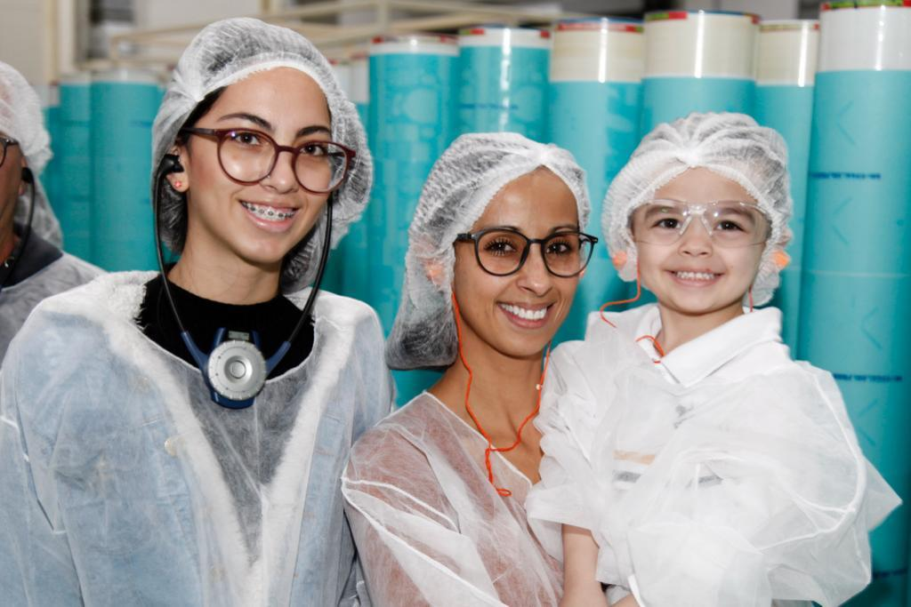
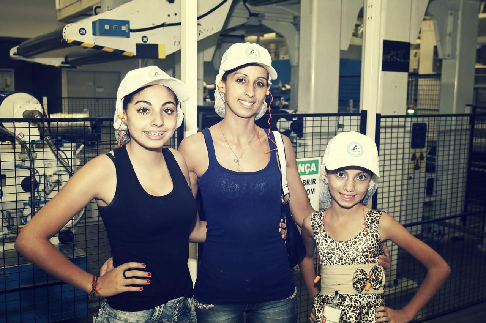

Quem sou eu
Olá! Sou Luciana, estudante de Engenharia de Software e colaboradora da Tetra Pak. A tecnologia sempre foi uma grande paixão em minha vida, e hoje atuo com softwares voltados à criação de arquivos flexográficos.
Recentemente, decidi retomar os estudos e investir com firmeza na área de Engenharia e Tecnologia — áreas que me desafiam e me encantam todos os dias. Este blog nasceu do desejo de inspirar outras mulheres e reforçar a importância da nossa presença no universo da engenharia.

